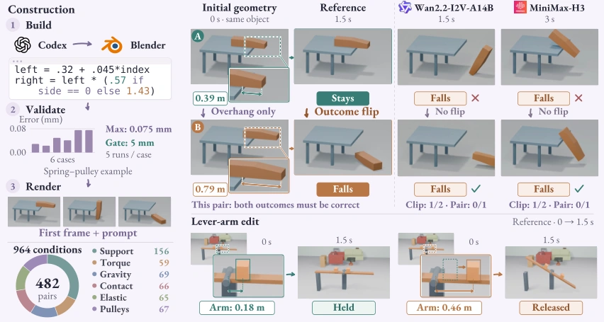
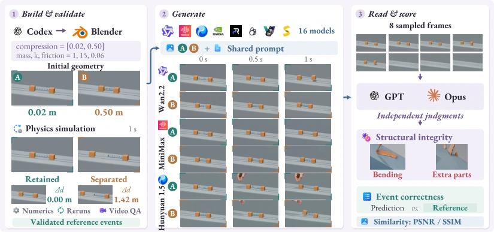
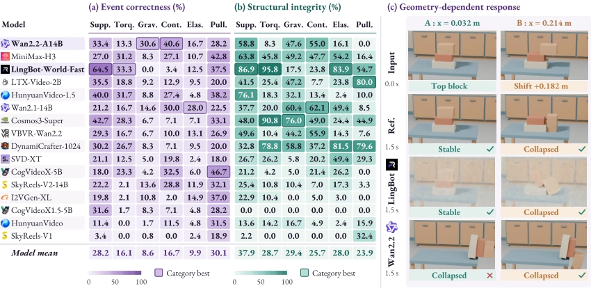
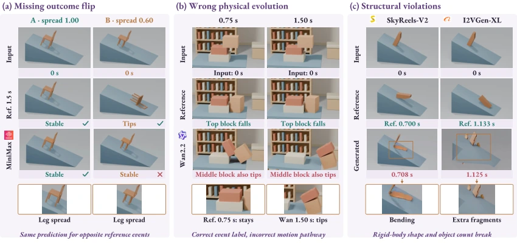

GeoFlip Preview: Benchmarking Geometry-Sensitive Physics in Video Generation
Geometry-induced outcome flips
Select a physical mechanism. The prompt stays fixed; only the initial geometry changes.
Will the block stay or fall?
Increase the overhang. The reference changes from stable to falling; the model must respond to this geometric difference.
Plausible motion can still be wrong. In the paper’s overhang example, Wan2.2 makes the block fall in both conditions, missing the outcome flip.
Labels show the simulation outcomes.
Abstract
Video generation models synthesize realistic motion, but can they change physical outcomes in response to changes in initial geometry? We introduce GeoFlip , a video generation benchmark centered on physical outcome flips induced by geometry. With shared physical settings and textual prompts held fixed, GeoFlip applies controlled interventions to support extent, object placement, and mechanism configuration, constructing paired scenes with contrasting reference events, such as remaining stable versus falling or tipping. These pairs test whether models translate geometric differences in the first frame into correct physical evolution. The benchmark comprises 482 scene pairs and 964 reference videos across six physical categories, with reference outcomes established through procedural scene construction, physics simulation, and numerical validation and verification of physical events. We evaluate 16 models for image to video generation along three dimensions: event correctness, structural integrity, and similarity to reference videos. We examine evaluation consistency with independent vision language judges. On the 442 conditions shared by all models, the highest event correctness averaged across tasks is 27.98%, revealing substantial limitations in physical generation conditioned on geometry. Further analysis shows that model strengths vary across physical mechanisms and that the three evaluation dimensions capture distinct capabilities. Typical failures include ignoring geometric changes, generating incorrect object motion, bending rigid objects, and introducing additional components. Rank correlations between judges reach 0.906 for event correctness and 0.929 for structural integrity. By combining controlled geometric interventions, verifiable physical references, and multidimensional evaluation, GeoFlip provides a systematic benchmark for assessing progress from visual realism toward physical consistency conditioned on geometry.
The GeoFlip Benchmark
GeoFlip contains 482 scene pairs and 964 reference videos across six physical categories: support and static stability, torque-driven rotation, constrained gravitational dynamics, contact and impact, elastic interaction, and pulley-mediated coupling.
We construct paired scenes through controlled edits to support extent, object placement, or mechanism configuration. Reference outcomes are established through physics simulation, numerical validation, and rendered-video checks. A pair enters the core benchmark only when both conditions pass validation and their reference events differ.


Evaluation Metrics
- Event correctness: balanced accuracy within each task, followed by an equal-weight average across tasks.
- Structural integrity: the task-macro proportion of conditions labeled structurally clear. Flagged and uncertain judgments remain in the denominator.
- Reference similarity: PSNR and SSIM on the separate 40-clip evaluation set.
Leaderboard
Results from Table 2 of the paper. Event correctness and structural integrity use
the same 442 conditions across 34 tasks; PSNR and SSIM use the separate 40-clip set.
| Rank | Model | |||||
|---|---|---|---|---|---|---|
| 1 | Wan2.2-I2V-A14B | 27.98 | 34.38 | 28.68 | 0.9659 | 3.17 |
| 2 | MiniMax-H3 | 23.06 | 48.31 | 28.38 | 0.9600 | 3.67 |
| 3 | LingBot-World-Fast | 26.69 | 60.81 | 21.88 | 0.9060 | 4.33 |
| 4 | LTX-Video-2B | 18.41 | 38.13 | 29.87 | 0.9494 | 5.83 |
| 5 | HunyuanVideo-1.5-I2V | 24.38 | 29.12 | 26.37 | 0.9301 | 6.00 |
| 5 | Wan2.1-I2V-14B-480P | 22.53 | 41.84 | 23.78 | 0.9157 | 6.00 |
| 7 | Cosmos3-Super | 21.10 | 51.55 | 25.99 | 0.9008 | 6.17 |
| 8 | VBVR-Wan2.2 | 17.66 | 32.66 | 28.05 | 0.9627 | 7.00 |
| 9 | DynamiCrafter-1024 | 16.87 | 59.01 | 23.24 | 0.9024 | 7.67 |
| 10 | SVD-XT | 13.00 | 27.08 | 27.30 | 0.9446 | 9.67 |
| 11 | CogVideoX-5B-I2V | 19.91 | 14.79 | 18.64 | 0.8716 | 10.17 |
| 11 | SkyReels-V2-I2V-14B | 19.22 | 13.84 | 18.14 | 0.9214 | 10.17 |
| 13 | I2VGen-XL | 15.56 | 7.65 | 19.46 | 0.8629 | 12.83 |
| 14 | CogVideoX1.5-5B-I2V | 15.22 | 0.00 | 18.54 | 0.9086 | 13.33 |
| 15 | HunyuanVideo-I2V-720P | 10.28 | 10.93 | 16.95 | 0.8566 | 14.33 |
| 16 | SkyReels-V1-I2V | 4.21 | 5.27 | 11.69 | 0.6251 | 15.67 |
Key Findings
- Correct events and intact structures are distinct capabilities. Wan2.2 leads event correctness at 27.98%, while LingBot-World-Fast leads structural integrity at 60.81%.
- Visual similarity does not imply physical correctness. LTX-Video-2B has the highest PSNR (29.87 dB), with 18.41% event correctness.
- Performance varies across mechanisms. Different models lead different physical categories; an overall ranking does not establish uniform geometry sensitivity.

Failure Modes
Qualitative comparisons reveal three recurring failures: missing the geometry-induced outcome flip, producing the right event label through incorrect object motion, and violating structural integrity by bending rigid bodies or introducing extra components.

Evaluation Reliability
On a separate 346-condition subset evaluated by both GPT and Opus, model rankings remain strongly correlated:
- Event correctness: Spearman ρ = 0.906
- Structural integrity: Spearman ρ = 0.929
Absolute structure scores differ more substantially between judges, making structural assessment the main source of judge sensitivity.
BibTeX
@misc{li2026geoflippreview,
title={GeoFlip Preview: Benchmarking Geometry-Sensitive Physics in Video Generation},
author={Yuqi Li and Junming Liu and Bowen Hu and Ruize Niu and Huiran Duan
and Ming-Hsuan Yang and Yingli Tian and Hao Wu},
year={2026},
eprint={2610.42002},
archivePrefix={arXiv},
primaryClass={cs.CV},
url={https://arxiv.org/abs/2610.42002}
}